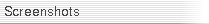
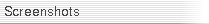

Demos
Here are some demo tracks made with LinuxSampler. Please let us know if you made a nice one!
Orion's Belt (3.7 MB)
written by Unknown, sequenced by PG Music, part of their
Modern Jazz Pianist product |
| | |
| LS Version: | CVS 2005-02-18 |
| Instruments: | Piano: Bardstown "The Bosendorfer Imperial Grand Version 2.2.gig" |
| | Bass: Scarbee - "Scarbee - J-Fingered 1.gig" |
| | Drums: Wizoo - "Ambience Kit XXL.gig" |
| Postprocessing: | TAP reverb |
| Submitter: | Mark Knecht |
| | |
|
This was sequenced in Muse and recorded in Ardour in one pass.
Reverb was added on an audio bus in Ardour using the TAP Reverb. The
mix was panned and bounced via 'Export Session'. The ogg file was
created by oggenc -q 5. Total project time was less than 30 minutes
from import of MIDI file to final ogg file.
|
St. Lewis Blues (4.2 MB)
written by W.C. Handy (1914), sequenced by John Arpin |
| | |
| LS Version: | CVS 2005-02-18 |
| Instruments: | Bardstown "The Bosendorfer Imperial Grand Version 2.2.gig" |
| Postprocessing: | None |
| Submitter: | Mark Knecht |
| | |
|
A pure piano track, taken as MIDI file from
Warren Trachtman's site.
LS was fed by the Pro Tools sequencer and the audio output was recorded with Ardour
on the same machine as LS (exported as 24-bit wave). The ogg bit rate is a bit low but
it's a 5 minute song.
|
Chevy Chase (2.3 MB)
written by Eubie Blake (1914), sequenced by Alex Hassan |
| | |
| LS Version: | CVS 2005-02-18 |
| Instruments: | Bardstown "The Bosendorfer Imperial Grand Version 2.2.gig" |
| Postprocessing: | None |
| Submitter: | Mark Knecht |
| | |
|
Another pure piano track, taken as MIDI file from
Warren Trachtman's site.
Sequenced by Muse, recorded in Ardour. Muse, Ardour and LS were all running on the same
Athlon XP 1600+ machine at the same time. The gig file was on a 1394 drive and audio was
recorded to the same 1394 drive.
|
 about
about

 
